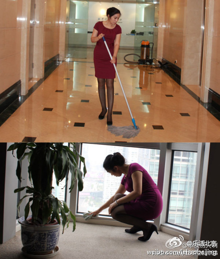

以前咱那公司也有一个气质很好的保洁阿姨, 穿得至少是比我讲究, 身材保持得很好, KJ介绍来的, 还记得吗? @晓丽Sherlly @眼筝筝@乐活北京:#北京八卦#她叫德姐，年近50，是某时尚杂志保洁。北京户口，家境尚好，工资不高因爱美爱时尚在这干了7年，气质极佳，每天穿不同衣服，堪称史上最时尚保洁。我去拍模特时认识了她，谈论穿衣搭配头头是道，我想起那个段子：每一个时尚杂志社，都有一个扫地的老太...这是扫地老太真人版啊！via单反伤人啊 